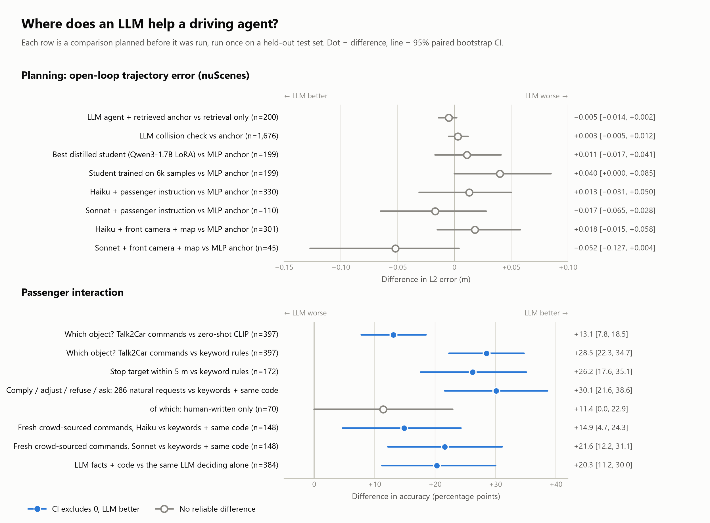
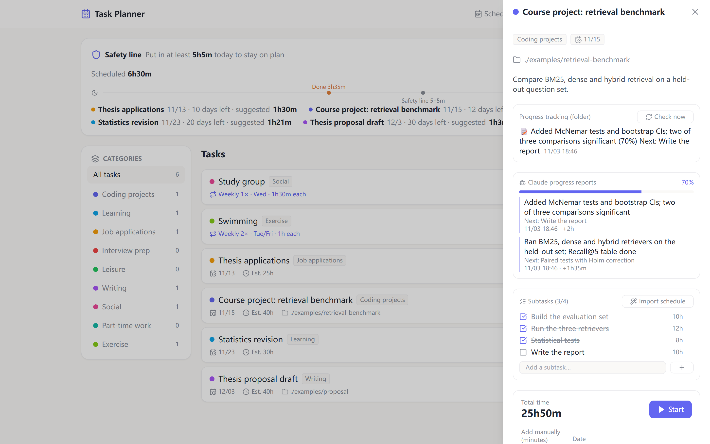
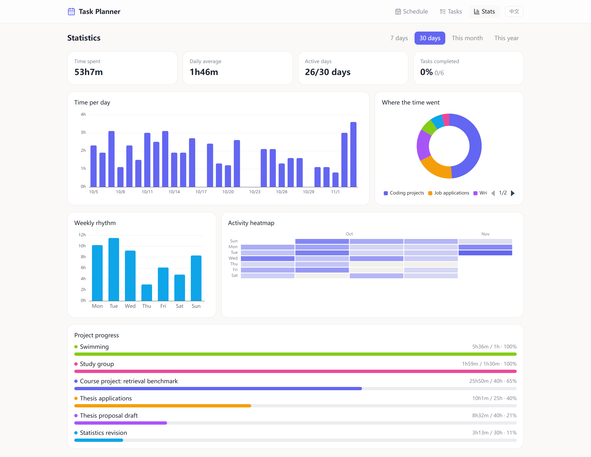

Lingwei Zhao · MSc Computer Science, Chalmers University of Technology
Where does an LLM actually help a driving agent?
I built a tool-using LLM agent on the nuScenes driving dataset and tested it against simpler methods. Every test ran once, under rules written down in advance. Scroll through what I found, then two more projects I built with Claude Code.
How I work. I decide the questions, design the experiments and the pass/fail rules, and check every result. Claude Code writes most of the code, and I review, run and use it. All three projects were built this way.
1DriveAgent · Python, Claude API, nuScenes · Oct 2026
An LLM agent for driving, tested in five steps
The agent queries perception tools, reasons in five stages and plans a 3-second trajectory. I compared it with the simplest methods that could do the same job.
1Planning
For planning, the LLM gave no reliable gain.
0.609m
L2 error of an 18-feature MLP, 6,019 validation frames
A small MLP that trains in a minute on a CPU had lower error than the LLM agent, and none of 12 distilled students beat it. Passenger instructions, the front camera and map semantics did not change that.
2Reasoning
Its written reasoning rarely changed its answer.
197/ 200 frames
output within 5 cm of a retrieved reference trajectory
The agent wrote five stages of reasoning. Yet with a reference trajectory in its input, it mostly copied it. The distilled students did the same: without the reference, their error rose to 1.162 m.
3Matching
Matching words to objects: here the LLM helps.
Which object does the passenger mean?
Same 397 held-out Talk2Car commands and the same candidate objects for every method. Accuracy, %.
Keyword rules
53.1
Embeddings (zero-shot CLIP)
68.5
LLM with the camera image
81.6
Given the camera image, the LLM found the object a passenger meant more often than CLIP embeddings or keyword rules. Its lead held across six rewrites of each command.
4Design
Best design tested: the LLM structures, code decides.
+20points
vs the same LLM deciding alone, 384 requests
The LLM only structures. It turns a passenger's words into fields: which object, what request, where to stop, any explicit rule-breaking.
Code decides. Deterministic rules check those fields against the map and choose to comply, adjust, refuse or ask: 89.9% right on 286 natural requests, against 59.8% for keywords with the same code.
Ask instead of guess. On 148 fresh crowd-sourced commands, silent wrong actions fell from 44.6% (keywords) to 8.8%.
5Evidence
Every comparison was planned before it was run.
An LLM judge was used only after it agreed with human labels in 95% of cases. Results come with scene-level bootstrap confidence intervals and McNemar tests.

In planning, every 95% interval crosses zero. In passenger interaction, the LLM leads by 11–30 points, and 7 of the 8 intervals lie above zero.One test case. The LLM picks the right person (#8) and extracts the request. The code sees that the exact spot is illegal and moves the stop to a legal one. The keyword pipeline picks the wrong object.
Claude Haiku / Sonnet APIfunction callingstructured outputCLIP baselineQLoRA distillationbootstrap CIs · McNemar · Holmabout $32 of API cost in total
2Task Planner · TypeScript, Node.js, React · Oct 2026
A full-stack app that Claude Code sessions report to
A local planner I use every day. It lays out the day on a timeline, works out how much I need to do today to meet each deadline, tracks time and shows statistics. When I work on a project in another Claude Code session, that session sends a progress report to the planner's API, and the task updates itself.
I wrote the specification and designed the interaction. The code was written with Claude Code. The interface switches between English and Chinese; the screenshots use demo data.
Day view. The safety line at the top shows the minimum for today (5h 5m) and a suggested amount per task with a deadline. On the right is the pool of unscheduled tasks.

Task detail. Progress reports from Claude Code update the percentage, the subtasks and the time spent.

Statistics over the last 30 days.
How it fits together
Front end: React 18, TypeScript, Vite, Tailwind, TanStack Query, ECharts and drag-and-drop scheduling.
Back end: Express and TypeScript, Prisma with SQLite (10 data models), 11 REST route groups and zod validation.
Progress API: other sessions POST a JSON report. The server validates it, applies it, stores the old values for undo, and offers a dry-run preview. If the server is offline, reports wait in an inbox and are applied on the next start.
Daily check: a script asks the local Claude Code CLI whether each tracked folder made real progress. It judges from file diffs only.
3Gmail Digest · Python, Gmail API, Claude Code routine · Oct 2026
One daily digest for all my mailboxes
I forward my university and personal mailboxes into one Gmail account. Every day a Claude Code cloud routine reads the last 24 hours of mail and sorts it by rules written in a plain-text prompt. It then emails me a short digest: what needs action, what real people wrote, and one line that counts everything else.
Other mailboxesforward into Gmail
→
fetch_inbox.pyGmail API, last 24 h
→
Claudefilters and summarises by ROUTINE.md
→
send_digest.pyGmail API
→
Phoneone notification a day
An example digest. The emails in it are made up.
Design choices
Gmail API over HTTPS. The routine's cloud sandbox blocks IMAP and SMTP, so both reading and sending go through the Gmail API.
No API key. The Claude session that runs the routine filters and summarises the mail itself. The rules live in ROUTINE.md, which anyone can edit.
Standard library only. About 770 lines of Python and no pip install. A setup wizard runs the OAuth flow, writes the config, and tests fetching and sending.
Made for others to reuse. Step-by-step guides in English and Chinese cover setup, mail forwarding and phone notifications.